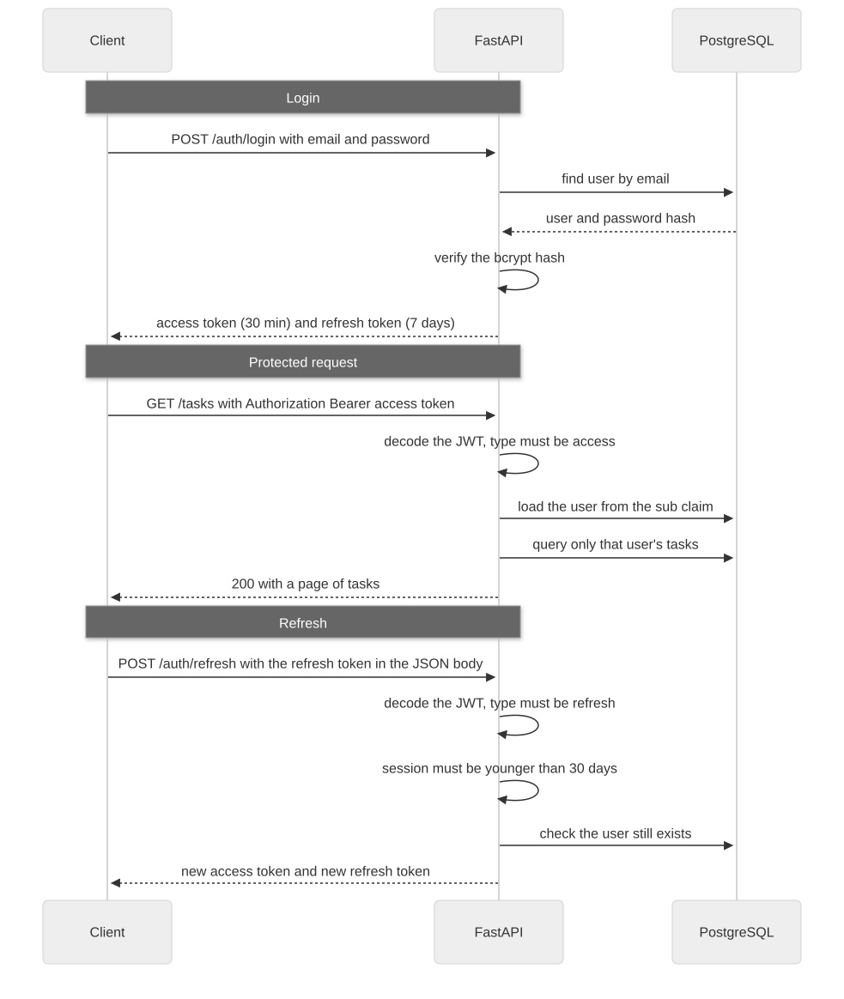

tasklane-api
ConcluídoArquitetura
Client / Swagger
FastAPI · DockerRender
PostgreSQLNeon
git push
GitHub Actionspytest + Postgres
Deploy (Render)
Como funciona


Decisões que importaram
O que o CI pegou
Primeira execução do workflow: falhou
ImportError: email_validator pydantic.EmailStr -> email-validator requirements.txt: (not declared) fix: add dependency, regenerate requirements.txt CI: passed
Endpoints
| Method | Route | Descrição | Auth |
|---|